PAPERREADER
Kullanım Kılavuzu
PaperReader, iPad için bir okuma ve çalışma asistanıdır. Bir web sayfasını, PDF'i ya da metni uygulamaya getirirsin; PaperReader onu okunabilir hale getirir, yapay zeka ile özetler, açıklar, çevirir — sen de üzerine kalemle not alırsın. Bu kılavuz, uygulamayı hiç bilmeyen birinin bile rahatça takip edebileceği şekilde, ekran görüntüleriyle adım adım her şeyi anlatır.
1. PaperReader nedir?
İnternette uzun bir makale buldun, okumak istiyorsun ama dili yabancı, metin uzun, terimler ağır. PaperReader tam bu an için yapıldı. Sayfayı uygulamaya alırsın; sol tarafta orijinal metin durur, sağ tarafta ise senin çalışma alanın vardır: burada tek dokunuşla özet çıkartır, metni kendi dilinde okur, anlamadığın terimlerin açıklamalarını görür, kendine soru-cevap kartları hazırlatır ve metne soru sorarsın.
En önemlisi: hiçbir şey otomatik toplanmaz. Hangi kaynağın uygulamaya gireceğine her zaman sen karar verirsin. PaperReader arka planda gezinmez, senin adına hiçbir yere giriş yapmaz; o, sen okurken yanında duran bir asistandır.
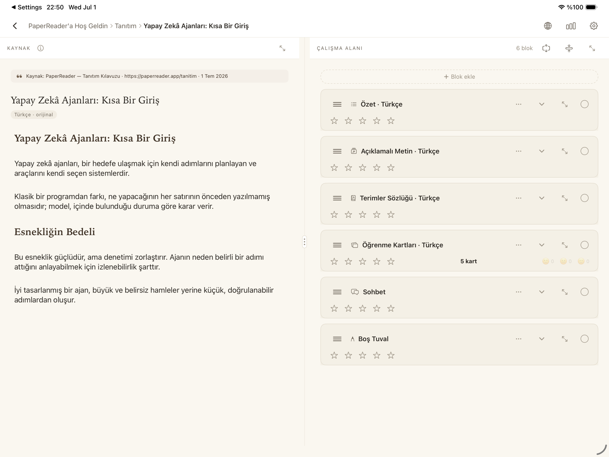
2. Üç temel kavram: Defter, Bölüm, Çalışma
PaperReader'da her şey üç kademeli bir düzen içinde durur. Bunu bir kağıt defter gibi düşünebilirsin:
Defter, en üstteki kaptır. Bir konuya ya da amaca bir defter açarsın: "Tez Araştırması", "İngilizce Makaleler", "Hobiler" gibi. Defterler ekranın solundaki kenar çubuğunda listelenir.
Bölüm, bir defterin içindeki sayfa sekmesidir. İlgili kaynakları bir arada tutar: "Tez Araştırması" defterinde "Kaynaklar", "Karşıt Görüşler", "Taslaklar" bölümleri olabilir. Bölümler, ekranın üstünde sekmeler halinde görünür.
Çalışma, tek bir kaynağa bağlı okuma ve not alma alanıdır. Her eklediğin kaynak (web sayfası, PDF, metin) bir çalışmaya dönüşür ve bir bölümün içinde yaşar.
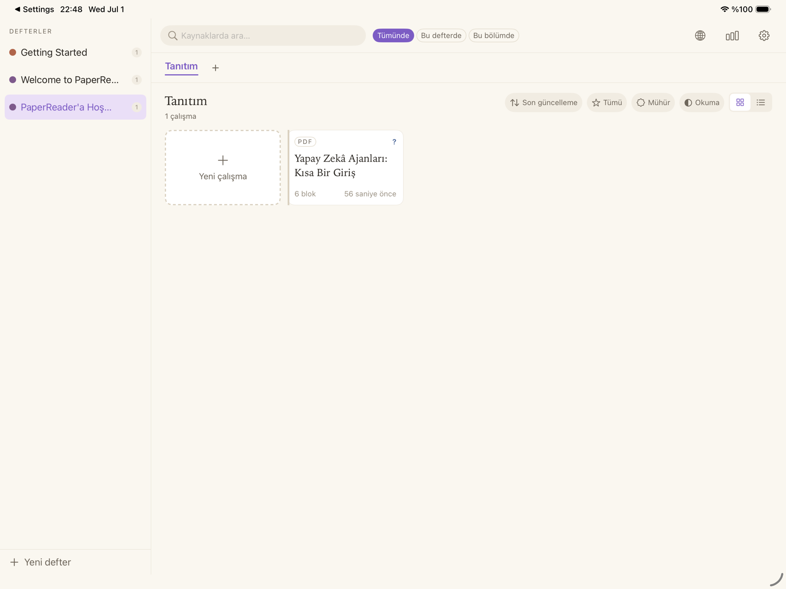
Yeni defter açmak için kenar çubuğunun altındaki "+ Yeni defter" satırına, yeni bölüm için sekmelerin yanındaki "+" işaretine dokun. Defterleri ve bölümleri sürükleyerek yeniden sıralayabilir, basılı tutup menüden yeniden adlandırabilirsin. Bir çalışmayı başka bölüme taşımak da mümkün — kartını basılı tutup hedef sekmenin üzerine bırakman yeterli.
3. İlk çalışmanı oluştur — kaynak eklemenin 4 yolu
Bölümdeki "+ Yeni çalışma" kartına dokununca "Yeni kaynak ekle" penceresi açılır. Üstte çalışmanın hangi defter ve bölüme ekleneceğini görürsün; altında dört kanal vardır:
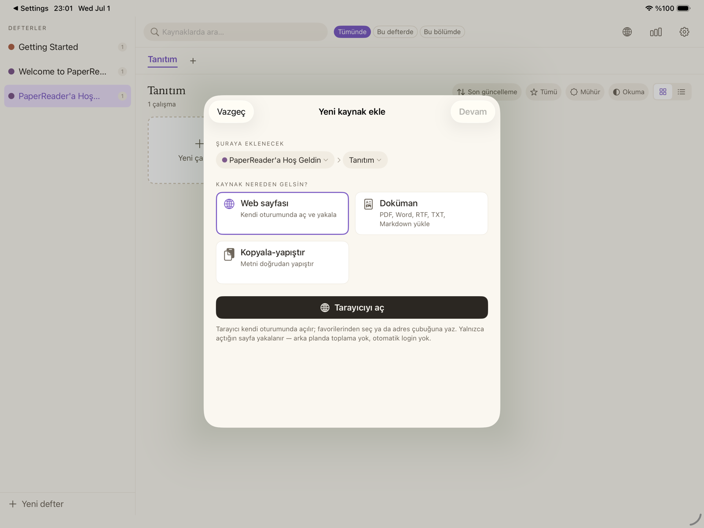
Web sayfası
"Tarayıcıyı aç" dediğinde PaperReader'ın kendi tarayıcısı açılır. Burası bildiğin bir tarayıcı gibidir: adres yazar, arama yapar, sitelere kendi hesabınla giriş yapabilirsin (aboneliklerin çalışır). Sık kullandığın siteleri yıldıza dokunarak favorilere eklersin; favoriler kategorilere ayrılmış bir pano halinde tarayıcının açılış sayfasında durur.
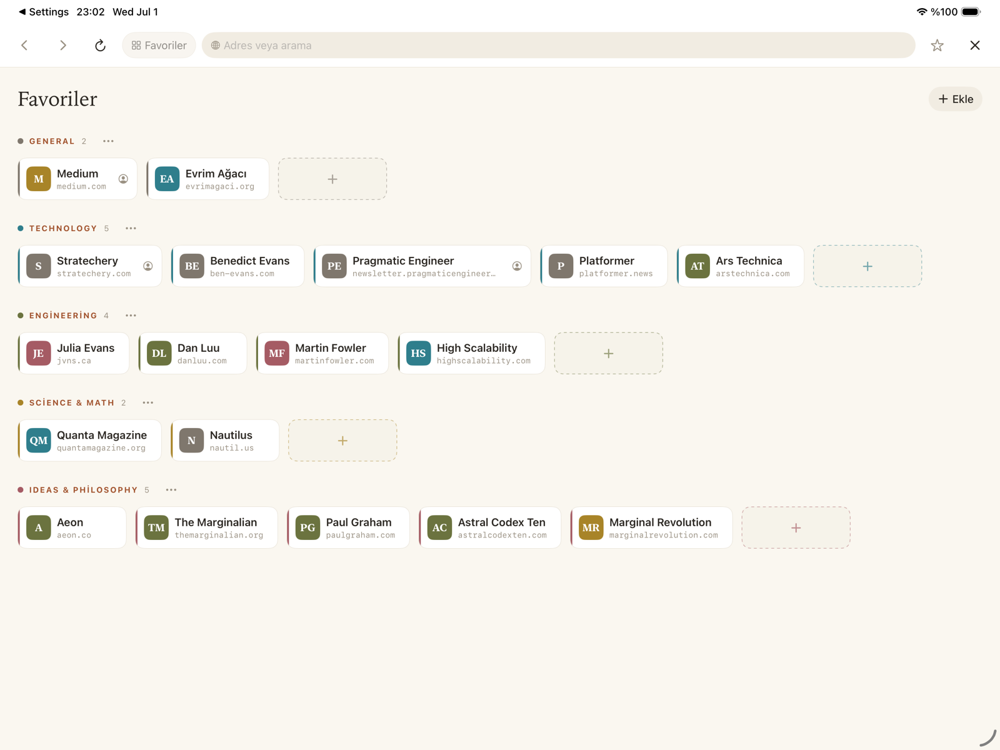
Okumak istediğin sayfaya gelince "Çalışma Oluştur" düğmesine dokun. Sayfanın metni ve görselleri alınır, çalışman oluşur ve otomatik olarak açılır. Görseller cihazına indirildiği için sayfa sonradan internetten kaldırılsa bile çalışman eksiksiz kalır.
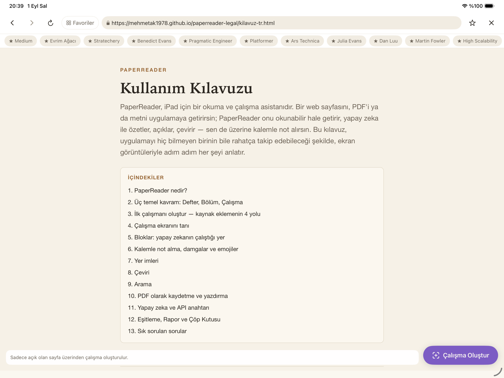
Doküman
PDF, Word (docx), RTF, TXT ve Markdown dosyalarını içe aktarır. Dosyayı seçersin, PaperReader başlıkları ve gömülü görselleri koruyarak metni bloklara ayırır, önizlemeyi onaylarsın, çalışman hazırdır.
Kopyala-yapıştır
Herhangi bir yerden kopyaladığın metni doğrudan yapıştırırsın. Metin, boş satırlara göre paragraf bloklarına ayrılır.
Paylaş sayfası
Safari'de ya da başka bir uygulamada bir sayfa veya dosya açıkken sistemin Paylaş düğmesine bas ve listeden PaperReader'ı seç. Bağlantı ya da dosya doğrudan PaperReader'a gelir; hedef bölümü onaylarsın, gerisi aynıdır.
Ücretsiz sürüm hakkında: PaperReader'a ücretsiz olarak 10 kaynak ekleyebilirsin. Daha fazlası için uygulama içinden PaperReader Pro aboneliğine geçilir. Silinen kaynaklar hakkı geri kazandırmaz; bu yüzden ilk kaynaklarını gerçekten çalışmak istediğin içeriklerden seçmeni öneririz.
4. Çalışma ekranını tanı
Bir çalışmayı açınca ekran ikiye bölünür.
Sol panel — Kaynak: Eklediğin içeriğin orijinal hali. Metin hiçbir zaman değiştirilmez ve her zaman orijinal dilindedir; en üstte yazar, yayın ve adres bilgilerinden oluşan bir künye durur. Bu panel salt-okunurdur: kaynağın aslına her an dönebilmen için oradadır.
Sağ panel — Çalışma Alanı: Senin sayfan. Buraya bloklar eklersin (bir sonraki bölümde tek tek anlatıyoruz). Her bloğun başlığına dokunarak açıp kapatabilir, başlıktaki büyütme simgesiyle bloğu tam ekrana alabilirsin — okumak ve kalemle not almak için en rahat görünüm budur. İki panel arasındaki çizgiyi sürükleyerek genişlikleri ayarlayabilirsin.
5. Bloklar: yapay zekanın çalıştığı yer
Sağ paneldeki "+ Blok ekle" düğmesine dokununca blok türlerini görürsün. Yapay zeka üreten bloklar (Özet, Açıklamalı Metin, Terimler, Kartlar) oluşturulurken önce hangi dilde istediğini sorar — kaynağın orijinal dilini ya da çeviri dillerinden birini seçersin — sonra içerik bir kez üretilir ve bloğa dondurulur: yeni bir sürüm istersen yeni bir blok eklersin.
Özet
Kaynağın tamamını yapılandırılmış bir özete dönüştürür. En üstte ANA FİKİR, en altta SONUÇ kutusu bulunur; aradaki bölümlerde önemli noktalar, tanımlar ve örnekler renkli kutularla işaretlenir. Özetin uzunluğunu Ayarlar'dan kısadan uzuna seçebilirsin.
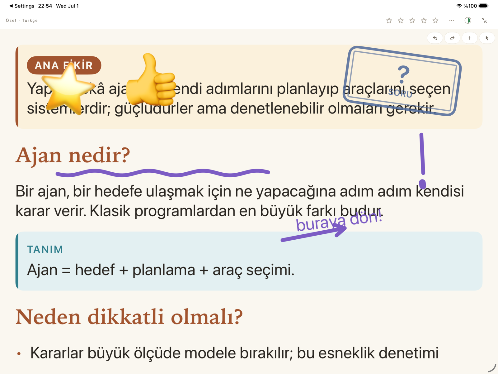
Açıklamalı Metin
Kaynağın metnini kelimesi kelimesine korur ve üzerine bir açıklama katmanı ekler: paragrafların arasına TANIM, TERİM, ÖNEMLİ ve ÖRNEK kutuları yerleşir, anahtar kelimeler fosforlu kalemle çizilmiş gibi vurgulanır. Metnin kendisi asla yeniden yazılmaz — okuduğun her cümle kaynağın kendi cümlesidir. Yabancı dildeki bir kaynağı kendi dilinde, açıklamalarla okumak için en güçlü araç budur.
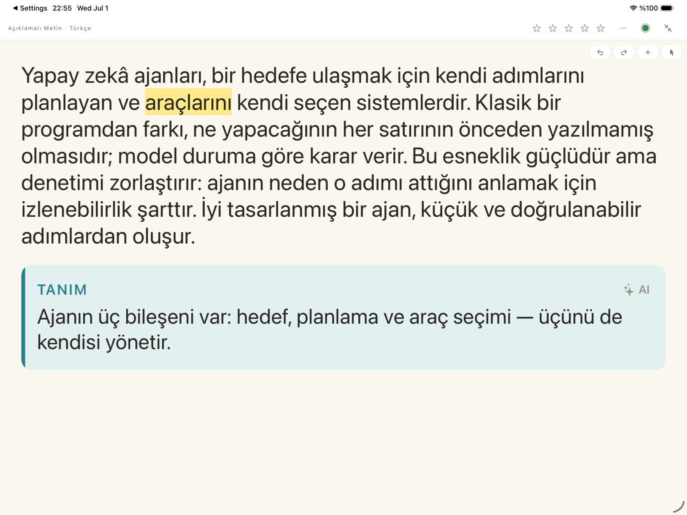
Terimler Sözlüğü
Kaynaktaki önemli terimleri ve kısa tanımlarını tek bir listede toplar. Donmuş bir başvurudur; istersen üzerine kalemle kendi notlarını eklersin.
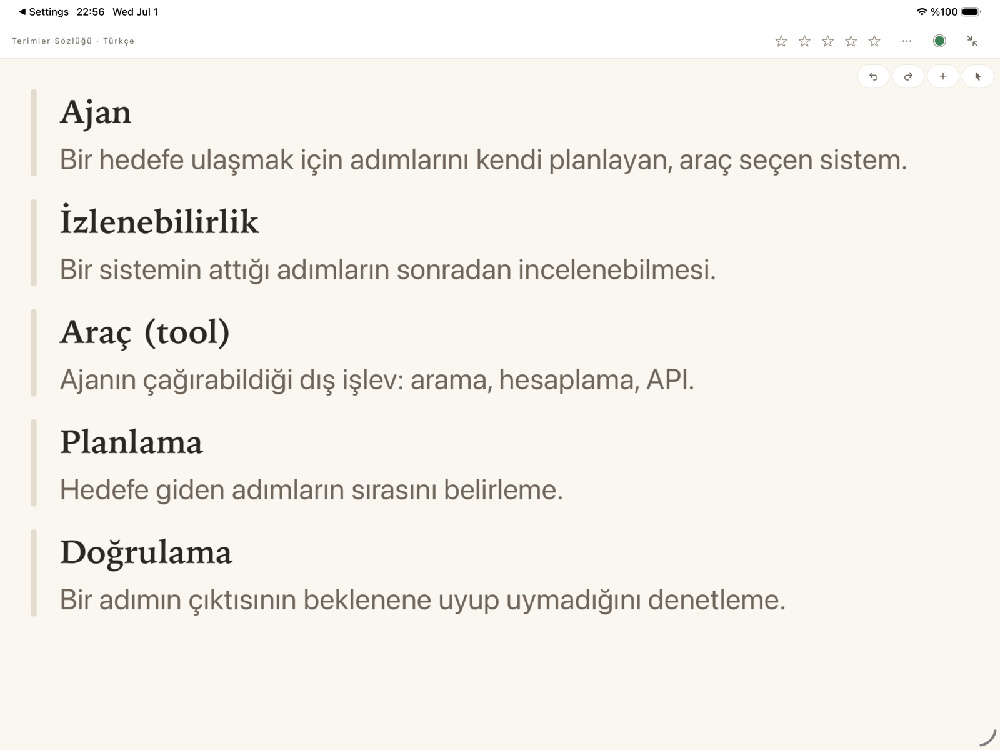
Öğrenme Kartları
Kaynaktan soru-cevap kartları üretir. Üretilen kartları önce önizler, istemediklerini çıkarır, sonra desteni onaylarsın. Çalışırken karta dokununca çevrilir, kaydırınca sonrakine geçersin; cevabın ardından ne kadar bildiğini yüz ifadeleriyle işaretlersin. Bu notlar, aralıklı tekrar mantığıyla hangi kartın ne zaman tekrar karşına çıkacağını belirler — zorlandıkların sık, bildiklerini seyrek görürsün.
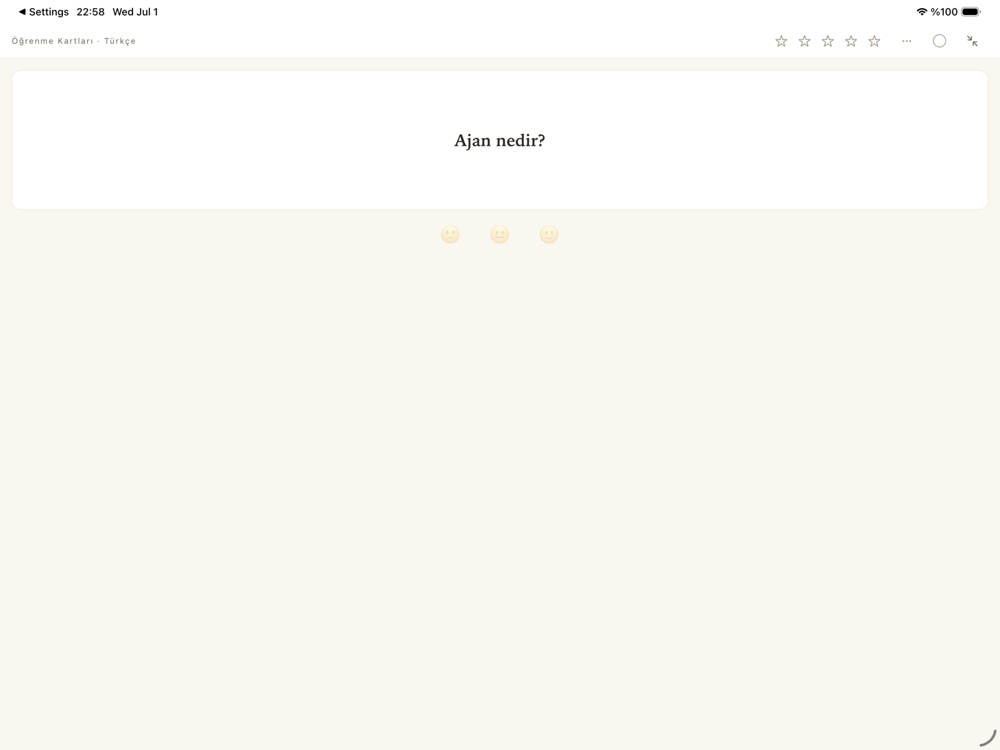
Sohbet
Kaynağınla konuşursun: "Bu yazar ne savunuyor?", "Üçüncü bölümü basitçe açıkla", "Bu iddianın dayanağı ne?" gibi sorular sorar, cevabın akışını canlı izlersin. İstersen kapsamı genişletirsin: yalnız bu kaynak, bu bölümdeki tüm kaynaklar ya da tüm defter. Bir de Genel mod vardır: kaynağa bağlı kalmadan genel bilgi sorarsın; bu cevaplar karışıklık olmasın diye "Genel bilgi" rozetiyle işaretlenir. Her sohbet bloğu kendi bağımsız konuşmasını tutar — farklı konular için farklı sohbet blokları açabilirsin.
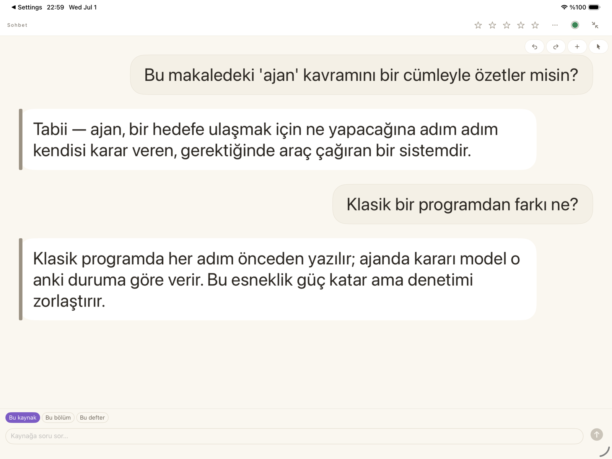
Boş tuval
Altında basılı içerik olmayan bomboş bir sayfa. Kendi şemanı çizmek, ders notu tutmak ya da beyin fırtınası yapmak için — yazdıkça aşağı doğru büyür.
6. Kalemle not alma, damgalar ve emojiler
Kalem, PaperReader'ın kalbidir. Her bloğun üzerine — özetin, açıklamalı metnin, sözlüğün üstüne — elle yazabilir, çizebilir, fosforluyla işaretleyebilirsin. Kalem çizer, parmak sayfayı kaydırır; mod değiştirmekle uğraşmazsın. Alttaki araç paletinden kalem türünü, rengini ve silgiyi seçersin. Notların içeriğe hizalıdır: sayfayı kaydırsan, yakınlaştırsan ya da bloğu tam ekrana alsan bile yazdığın her şey yerli yerinde kalır.
Araç çubuğundaki "+" düğmesi Yerleştir menüsünü açar. Buradan ekleyebileceklerin:
- Metin kutusu: klavyeyle yazılan, istediğin yere taşınabilen serbest not. Yazı tipi, boyut ve renk seçilebilir.
- Damgalar: "önemli", "soru", "tekrar bak" gibi mühürler — bir paragrafı işaretlemenin en hızlı yolu.
- Tarih damgası: bastığın günün tarihini basar ve dondurur; "bunu ne zaman okudum?" sorusunun cevabı hep orada durur.
- Rakamlar (0–9): adımları ya da öncelikleri numaralandırmak için.
- Emojiler: ⭐️ 👍 👏 gibi tepki çıkartmaları.
İnce bir ipucu: tuvale parmağınla basılı tutarsan Yerleştir menüsü açılır ve seçtiğin öğe tam bastığın noktaya yerleşir. Araç çubuğunun en sağındaki ok düğmesi ise seçim modudur: yerleştirdiğin damga ve metin kutularını sonradan seçip taşır, boyutlandırır, döndürür ya da silersin. Her işlem geri alınabilir.
7. Yer imleri
Uzun bir metinde "buraya geri döneceğim" dediğin yerleri yer imiyle iğnelersin: Yerleştir menüsünden Yer İmi'ni seç, satırın başına küçük bir iğne oturur. Her yer imine etiket ("önemli", "alıntı", "sınavda çıkar"…) ve kısa bir not ekleyebilirsin.
Bütün yer imlerin tek listede toplanır: kütüphanenin kenar çubuğundaki Yer İmleri satırına dokun. Listeyi deftere, etikete ya da arama metnine göre süzebilirsin; bir satıra dokununca ilgili çalışma açılır ve tam işaretlediğin satıra gider.
8. Çeviri
Ayarlar'da sıralı bir hedef dil listesi tutarsın (Türkçe, İngilizce, Almanca… 30 dil). Yapay zeka bloklarını oluştururken bu dillerden birini seçersin: örneğin İngilizce bir makalenin Açıklamalı Metnini Türkçe istersen, metin çevrilir ve açıklamalar Türkçe gelir. Bir kez çevrilen metin hatırlanır — aynı dile ikinci geçiş beklemeden açılır. Sol paneldeki orijinal her zaman olduğu gibi kalır; çeviri her zaman sağ panelde, senin istediğin blokta yaşar.
9. Arama
Kütüphanenin üstündeki arama kutusu iki katmanlı çalışır. Önce birebir eşleşmeleri bulur: aradığın kelime başlıkta ya da metinde geçiyorsa listelenir. Ama asıl güzeli: anlamca ilgili pasajları da bulur — "yapay zeka güvenliği" diye arattığında, bu kelimeler hiç geçmese bile o konuyu anlatan paragraflar "Anlamca ilgili" başlığı altında çıkar. Bir sonuca dokununca çalışma açılır ve tam o pasaja gidip geçici bir vurguyla gösterir. Aramanın kapsamını da seçebilirsin: her yerde, bu defterde, bu bölümde ya da yer imlerinde.
10. PDF olarak kaydetme ve yazdırma
Herhangi bir bloğu — üzerindeki tüm kalem notları, metin kutuları ve damgalarla birlikte — baskı-dostu bir PDF olarak dışa aktarabilirsin: bloğun ••• menüsünden "PDF olarak kaydet"i seç. Çıkan dosyayı yazdırabilir, paylaşabilir ya da Dosyalar'a kaydedebilirsin. PDF'in başına kaynağın künyesi otomatik eklenir — nereden geldiği hep belli olur.
11. Yapay zeka ve API anahtarı
PaperReader'ın yapay zeka özellikleri (özet, açıklamalı metin, çeviri, kartlar, sohbet) senin kendi API anahtarınla çalışır. Bu bilinçli bir tasarımdır: aracı yoktur, içeriğin bizim sunucularımızdan geçmez — cihazından doğrudan seçtiğin yapay zeka sağlayıcısına gider ve yalnızca senin onayınla gider.
Anahtar nasıl eklenir?
- Bir yapay zeka sağlayıcısından (Google Gemini, Anthropic, OpenAI veya Groq) kendi API anahtarını al. Anahtar, sağlayıcının kendi sitesinden ücretsiz ya da kullandıkça-öde hesapla alınır.
- PaperReader'da Ayarlar → AI Sağlayıcı Bağlantıları'na gir, sağlayıcını seç ve anahtarı yapıştır. Uygulama bağlantıyı test eder; yeşil "Bağlı" işaretini görünce hazırsın.
- Anahtarın yalnızca cihazının güvenli deposunda (Keychain) saklanır; bizimle ya da başkasıyla paylaşılmaz.
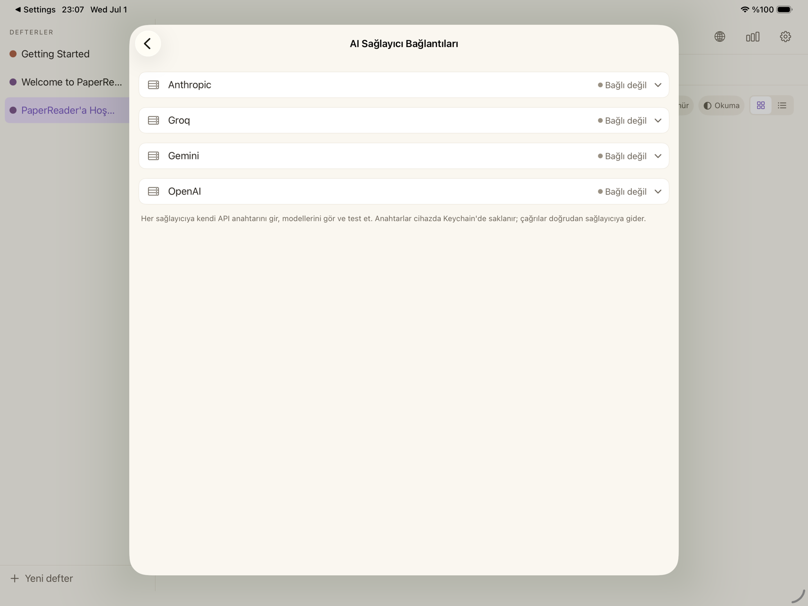
İpucu — harcama sınırı koy: Çoğu sağlayıcı, hesabına aylık bir harcama üst sınırı (limit) belirlemene izin verir. Anahtarını alırken böyle bir sınır koymanı öneririz: beklenmedik bir fatura riskini baştan kapatır. Sınıra takılırsan sağlayıcının sitesinden yükseltmen yeterlidir.
Model seçimi: hafif ve ağır işler
Ayarlar'daki Kullanılan AI Modelleri bölümünde iki iş sınıfı için ayrı model seçersin. Hafif işler (özet, sohbet gibi kısa görevler) için ucuz ve hızlı bir model yeterlidir; Ağır işler (tam çeviri ve açıklamalı metin gibi yapıyı koruyan büyük görevler) için daha güçlü bir model önerilir. İstersen ikisi için aynı modeli de kullanabilirsin. Listede yalnızca anahtarını ekleyip bağladığın sağlayıcıların modelleri görünür.
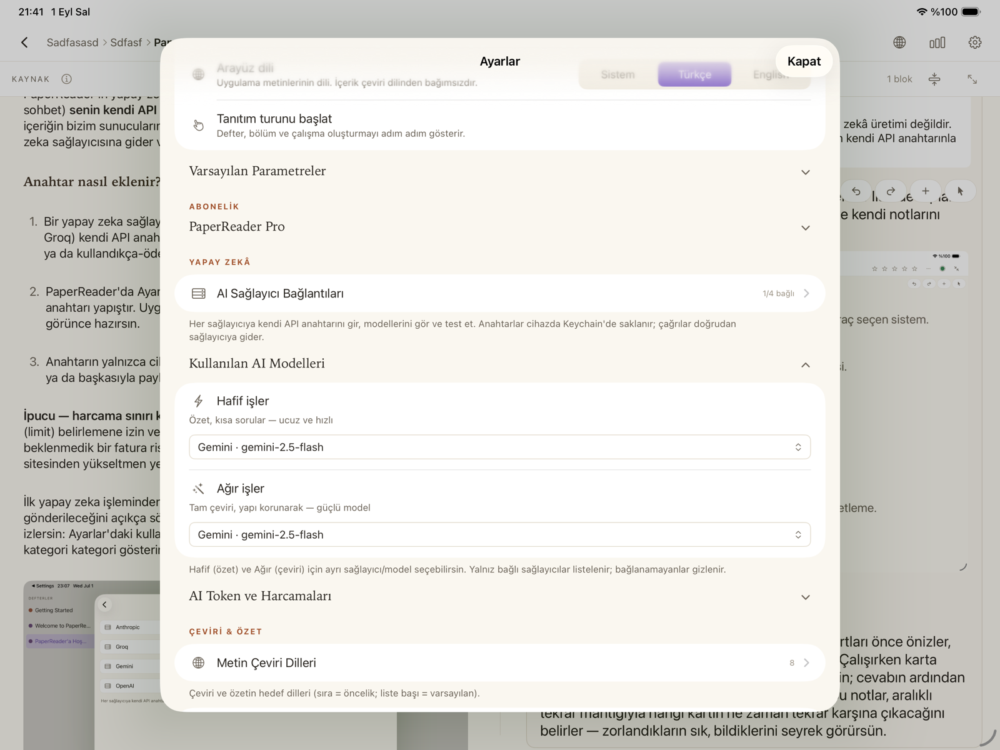
İlk yapay zeka işleminden önce uygulama sana hangi sağlayıcıya veri gönderileceğini açıkça söyler ve onayını ister. Harcamanı da uygulama içinden izlersin: Ayarlar'daki kullanım paneli, hangi işlemin yaklaşık kaça mal olduğunu kategori kategori gösterir.
Anahtar olmadan ne çalışır? Okuma, kalemle not alma, damgalar, yer imleri, organizasyon, arama ve PDF dışa aktarma anahtarsız da eksiksiz çalışır. Yapay zeka blokları ise anahtar olmadan içerik üretmez — bu durumda uygulama seni nazikçe uyarır ve istersen üzerine not alabileceğin boş bir Açıklamalı Metin bloğu oluşturur.
12. Eşitleme, Rapor ve Çöp Kutusu
iCloud eşitleme: Çalışmaların, notların ve kartların iCloud üzerinden cihazların arasında otomatik eşitlenir; uygulamayı silip yeniden kursan bile kütüphanen geri gelir. Açıp kapatman gereken bir ayar yoktur. API anahtarın ise güvenlik gereği eşitlenmez — her cihazda bir kez girilir.
Rapor: Kütüphanenin üst çubuğundaki grafik simgesi, okuma alışkanlıklarını gösteren bir rapor açar: ne kadar kaynak ekledin, ne kadarını bitirdin, kartların ne durumda, yapay zeka harcaman ne kadar — hepsi zaman penceresine göre süzülebilir grafiklerle. Rapor tam ekran açılır; sol üstteki ok ile geri dönersin.
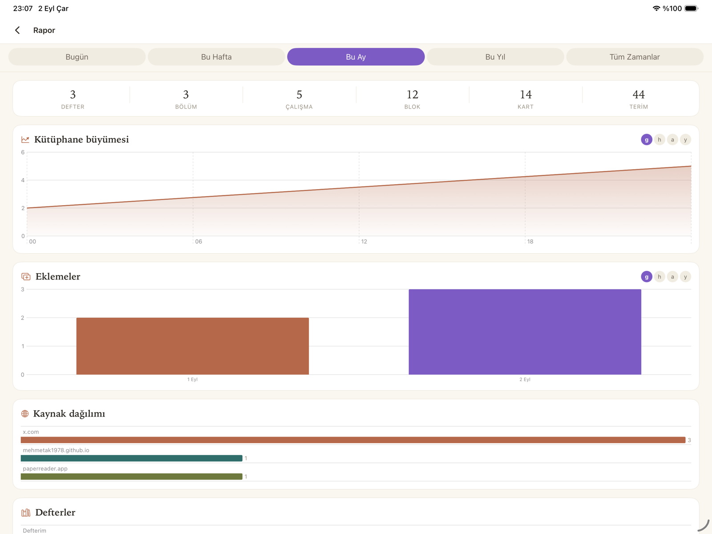
Çöp Kutusu: Sildiğin defter, bölüm, çalışma, blok ve yer imleri önce Ayarlar → Çöp Kutusu'na gider. Oradan tek dokunuşla geri alabilir ya da kalıcı olarak silebilirsin. Yanlışlıkla silmeler geri döndürülebilir.
13. Sık sorulan sorular
- İnternet olmadan çalışır mı?
- Eklenmiş çalışmaları okumak, kalemle not almak ve organizasyon tamamen çevrimdışı çalışır (görseller de cihazına indirildiği için). Yeni web kaynağı eklemek ve yapay zeka özellikleri internet ister.
- Verilerim nereye gidiyor?
- Çalışmaların senin iCloud hesabının özel alanında saklanır; biz göremeyiz. Yapay zeka kullandığında ilgili metin, yalnız senin onayınla, doğrudan seçtiğin sağlayıcıya gider. PaperReader ayrıca hiçbir veri toplamaz.
- API anahtarı almak zorunda mıyım?
- Hayır. Okuma, not alma ve organizasyon anahtarsız eksiksizdir. Yapay zeka özelliklerini istediğinde bir anahtar eklersin; dilediğin zaman da kaldırabilirsin.
- 10 ücretsiz kaynak ne demek?
- Ücretsiz sürümde toplam 10 kaynak (çalışma) ekleyebilirsin. Sınırsız kaynak için uygulama içinden PaperReader Pro aboneliğine geçilir.
- Bir şeyi yanlışlıkla sildim, geri gelir mi?
- Evet: silinen defter, bölüm, çalışma ve bloklar önce Ayarlar → Çöp Kutusu'na gider; oradan tek dokunuşla geri alabilirsin.
- Tanıtım turunu tekrar izleyebilir miyim?
- Evet: Ayarlar → Görünüm → "Tanıtım turunu başlat".